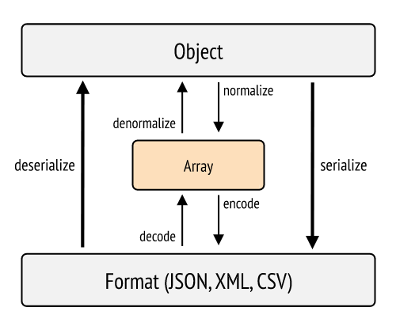

Creació d'una API bàsica amb Symfony
Abans d'entrar en matèria alguns conceptes: * Serialitzar. La serialització és el procés de convertir un objecte en una altre format per a emmagatzemar-lo o transmetre'l i posteriorment ser decodificat. * Normalitzar. Ajuden en el procés de serialització, convertint els objectes en un element intermig, com pot ser una array.

El següent codi genera una API en la aplicació de pel·lícules:
**
* @Route("/api/v1/movies")
*/
class ApiController extends AbstractController
{
/**
* @Route("/", name="api_movies_links", methods={"GET"})
* @param Request $request
* @param MovieRepository $movieRepository
* @return JsonResponse
*/
public function index(Request $request, MovieRepository $movieRepository): JsonResponse
{
$movies = $movieRepository->findAll();
return new JsonResponse($movies, Response::HTTP_OK);
}
/**
* @Route("/{id}", name="api_moives_show", methods={"GET"})
* @param Request $request
* @return JsonResponse
*/
public function show(Request $request, ?Movie $movie): JsonResponse
{
if (!empty($movie))
return new JsonResponse($movie, Response::HTTP_OK);
else
return new JsonResponse("error", Response::HTTP_NOT_FOUND);
}
/**
*
* @Route("/", name="api_movies_create", methods={"POST"})
*/
public function create(Request $request): JsonResponse
{
$movie = new Movie();
$data = [];
if ($content = $request->getContent()) {
$data = json_decode($content, true);
}
try {
$movie->setTitle($data["title"]);
$movie->setOverview($data["overview"]);
$movie->setTagline($data["tagline"]);
$movie->setPoster($data["poster"]);
$movie->setReleaseDate(new \DateTime($data["release_date"]));
} catch (\Exception $e) {
$error["code"] = $e->getCode();
$error["message"] = $e->getMessage();
return new JsonResponse($error, Response::HTTP_BAD_REQUEST);
}
$em = $this->getDoctrine()->getManager();
$em->persist($movie);
$em->flush();
return new JsonResponse($movie, Response::HTTP_CREATED);
}
}
Nelmio
FOSRESTBundle
ApiPlatform
Recursos
En Primeros pasos con Symfony 5 como API REST es genera una API basada en els mateixos components que hem utilitzat.
En Getting started REST API with Symfony 4 s'utilitzen diversos components addicionals com el Fos-Rest-Bundle i JMS Serializer.
En Curso de Symfony 5. Creando una API desde cero teniu un curs molt complet sobre com crear una API en Symfony 5 des de cero.
API Platform és un framework que permet crear API de forma quasi automàtica en Symfony.